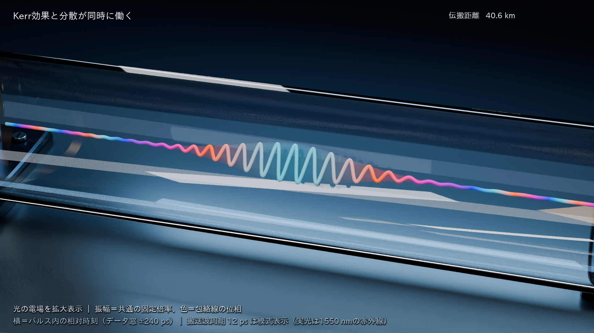

INSIDE AN OPTICAL FIBER
光が、光を
変えていく。
光ファイバの中で、パルスはどう変わるのか。
同じパルスを、三つの条件で追いかける。
光の「強さ」と「位相」。
二つを分けて見ると、変化の理由が見えてくる。
強さは、パルスのどこに光のエネルギーが集まっているか。位相は、光の振動が周期のどこにあるか。この二つは別の性質だ。Kerr効果は強さに応じて位相を変え、波長分散は周波数成分の到着をずらす。
以下の映像は、ガウス型の短い光パルスを80 km伝搬させた計算から作った。まず一つずつ、最後に同時に。横方向は、一つのパルスの中での相対時刻。パルスと一緒に進む視点で見ている。
波が低くなるのは、3条件に共通するファイバの損失です。Kerr効果だけの条件では、時間方向の幅は変わりません。
SELF-PHASE MODULATION
01強さが、位相を変える。
まず、Kerr効果だけを見る。光の強い中心と、弱い裾では、蓄積する位相が違う。
見るところ
パルスの中心と裾を比べる。損失で弱くなりながらも時間幅を保ち、位相の分布が変化する。
起きていること
シリカでは、光が強いほど屈折率がわずかに増す。その結果、光自身の強さに応じて位相が変わる。これが自己位相変調。
何が分かるか
位相の変化が時間の場所ごとに違うと、周波数にも幅が生まれる。分散を切ったこの比較では、Kerr効果だけでパルスの強度幅は広がらない。
入射時に対する出口の比。どちらも強度で重み付けしたRMS幅。
CHROMATIC DISPERSION
02周波数が違うと、到着がずれる。
次に、波長分散だけを見る。短いパルスにも周波数の幅があり、それぞれの成分が同じ速さでは進まない。
見るところ
伝搬が進むにつれて、パルスが時間方向へ広がるところを見る。
起きていること
このファイバでは、周波数成分ごとに到着時刻がずれる。重なっていた成分がずれるため、パルスの強度幅が広がる。
何が分かるか
光の強さに依存しない変化もある。位相が変わることと、時間方向へ広がることを分けて見ると、Kerr効果の役割が読み取りやすい。
入射時に対する出口の比。どちらも強度で重み付けしたRMS幅。
KERR × DISPERSION
03二つの変化が、影響し合う。
最後に、Kerr効果と分散を同時に入れる。位相が変わると、分散による広がり方も変わる。
見るところ
同じ入射パルスから始めた「分散だけ」の映像と、輪郭の変化を見比べる。
起きていること
Kerr効果が生む周波数の変化を、分散が時間方向の変化へつなぐ。一方、形が変われば光の強さも変わり、その後の位相の蓄積も変わる。
何が分かるか
この条件の出口では、時間幅は分散だけの場合より小さくなり、周波数幅は入射時より狭くなった。作用の組み合わせによって、変化の向きと大きさが変わる。
入射時に対する出口の比。どちらも強度で重み付けしたRMS幅。
位相の変化が、
形の変化へつながる。
今回の出口では、Kerr効果と分散を同時に入れた時間幅が、分散だけの場合の0.785倍になった。 周波数幅は入射時の0.853倍。二つを同時に入れたときの結果は、この条件での計算値だ。
光通信では、多数のパルスが続いて情報を運ぶ。位相や形が変わると、受信した情報を読み取りにくくなることがある。この三つの映像は、その前段にある物理を、単独のパルスで見ている。
本リポジトリの1600 km・DP-16QAM・増幅雑音を含む学習評価とは、別の説明用実験。ここから補償性能やビット誤り率の改善を結論づけることはできない。
映像の読み方
- 横方向
- パルスと一緒に進む時間の座標。生成する電場形状は-240〜240 psの共通範囲で、カメラがその内部を接写する。低い裾は画面の外に出ることがある。映像中のガラスの長さは説明用の縮尺。
- 線の揺れ
- 計算したX・Y偏波の電場から作る。見えるように振動の周期を12 psへ拡大した。実際の1550 nmの光に対して約2,321倍。この入力の偏光方向は一定。
- 透明な輪郭
- 電力の平方根に比例する振幅を、大きさに置き換えた模式表現。線と輪郭には、3本・全距離で共通の尺度を使う。16 dBの伝送損失も残している。
- 色
- 位相を見分けるための色分け。青緑は0、橙は正側、青は負側、折り返しの境界は紫。光の見える色を撮影したものとしては読まない。ごく弱い裾では色を隠す。
- 映像の進行
- 距離0〜80 kmに伴う変化を、ゆっくり見る。1 km刻みの81波形の間は描画する形状と色を補間し、各動画フレームをBlenderでレンダリングした。上映時間は実際の飛行時間を表す値ではない。
- 操作
- 自動再生はしない。動画にフォーカスした状態で Space / K は再生・停止、← / → は5秒移動、F は全画面。各動画の速度は0.5倍にもできる。
計算条件と、ここから言えること
| 伝搬モデル | 二偏波のManakov方程式 / 対称SSFM |
|---|---|
| 距離 | 80 km / 増幅器なし |
| 波長 | 1550 nm |
| 入射パルス | ガウス型 / 強度の1/e半幅 20 ps |
| 入射ピーク電力 | XY合計 50 mW / 二偏波に等分 |
| 損失 | 0.2 dB/km |
| 波長分散 | 17 ps/(nm·km) / 映像01では0 |
| 非線形係数 | 1.3 /(W·km) / 映像02では0 |
| 雑音・学習 | ASEなし / 学習なし / BER評価なし |
解析極限との照合、エネルギー保存と損失の確認、距離刻み・時間刻み・計算窓を変えた比較、保存用データの確認を行い、記録した通常検証の基準を満たした。独立validator評価は今回実施していない。
強度幅と周波数幅は、分布全体を重み付けして求めたRMS幅。見かけの輪郭の幅、半値全幅、中心の明るさとは区別する。入射に対する比を示し、各フレームを個別の最大値で描き直して結果を強調しない。
映像の表現と、実際の光との対応
冒頭の横断面は、クラッド直径125 µmとコア直径8.2 µmの比を保持した。細部ではコアの表示を冒頭に対して約21倍に拡大する。ガラスの切り欠きと器具は説明用のモデルで、電場と透明な輪郭はその中に重ねた計算量の可視化。
生成する電場形状の共通時間窓の外に残るエネルギーは、3条件・全距離を通して最大0.0258%。元の物理データの標本から計算した値で、接写した画面の外に出るエネルギーを測った値ではない。RMS幅の計算には、2 nsの全計算窓を用いる。
滑らかに描くため、複素電場の実部・虚部をパルス内の時間方向へ4倍の点密度で線形補間し、その点で模式的な振動を描く。元データの標本点は保持した。これは描画の補間で、物理計算の精度を追加する処理ではない。
ごく弱い裾では、位相の色を隠す。基準は各保存距離のピーク電力に対する10⁻⁶。振幅を毎フレームの最大値で拡大せず、損失を含む絶対値を共通の表示尺度へ写している。
ガラスの見え方、背景、照明、カメラの動きは説明のための表現。使用した表現と倍率は映像マニフェストに保存した。
動画・Blenderシーン・再生成記録
動画はこのHTMLの隣に保存したMP4を読む。フォルダ全体を保持すれば、ネット接続を使わずに閲覧できる。外部フォントや画像を取得しない。出典リンクを開くときだけ接続が必要。
.venv/bin/python scripts/build_kerr_explanation.py --physics-run artifacts/kerr-physics --renders reports/animations/kerr_physicsファイルのSHA-256は、今回届けた版の識別に用いる。Blender、GPU、エンコード環境が変わると、再描画した画素やMP4のバイト列は一致しないことがある。
出典
- Stolen and Lin, Self-phase-modulation in silica optical fibers (1978)
シリカファイバの自己位相変調と周波数幅の変化。今回のパルス条件の実測ではない。 - Marcuse, Menyuk and Wai, Application of the Manakov-PMD equation (1997)
二偏波の非線形結合を平均化したManakovモデルの基礎。 - Hasegawa and Tappert, Transmission of stationary nonlinear optical pulses I (1973)
非線形性と分散の相互作用の基礎。今回の損失を伴うガウスパルスをソリトンとは呼ばない。 - Sinkin et al., Optimization of the split-step Fourier method (2003)
SSFMの距離刻みと精度の検討。今回の数値検証は保存した記録を参照。 - Corning SMF-28 ULL データシート
コアとクラッドの直径比の参考。描画したガラスと器具は説明用のモデル。